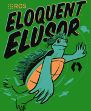
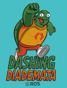

发行版 [待校准@1233]
什么是发行版？ [待校准@1234]
ROS分布是一组版本化的ROS包。这些类似于Linux发行版 (例如Ubuntu)。ROS发行版的目的是让开发人员针对相对稳定的代码库进行工作，直到他们准备好将所有内容向前推进。因此，一旦发行版发布，我们将尝试限制对核心包 (ros-桌面-full下的所有内容) 的错误修复和不间断改进的更改。这通常适用于整个社区，但对于 "higher" 级包，规则不那么严格，因此它落在给定包的维护者身上，以避免破坏更改。 [待校准@1235]
发行版列表 [待校准@1236]
以下是当前和历史ROS 2分布的列表。表中以绿色标记的行是当前支持的分布。 [待校准@1237]
发行版 [待校准@1246] |
发布日期 [待校准@1247] |
标志 [待校准@1248] |
终止日期 [待校准@1249] |
|---|---|---|---|
2022年5月23日 [待校准@1251] |
|||
2021年5月23日 [待校准@1253] |
2022年11月 [待校准@1255] |
||
2020年6月5日 [待校准@1257] |
2023年5月 [待校准@1259] |
||
2019年11月22日 [待校准@1261] |
 |
2020年11月 [待校准@1263] |
|
2019年5月31日 [待校准@1265] |
 |
2021年5月 [待校准@1267] |
|
2018年12月14日 [待校准@1269] |
|
2019年12月 [待校准@1271] |
|
2018年7月2日 [待校准@1273] |
|
2019年7月 [待校准@1275] |
|
2017年12月8日 [待校准@1277] |
|
2018年12月 [待校准@1279] |
|
2017年9月13日 [待校准@1281] |
2017年12月 [待校准@1282] |
||
2017年7月5日 [待校准@1284] |
2017年9月 [待校准@1285] |
||
2016年12月19日 [待校准@1287] |
2017年7月 [待校准@1288] |
||
2015年8月31日 [待校准@1290] |
2016年12月 [待校准@1291] |
![Crystal标志 `[待校准@1243] <http://localhost:3000/#/home?msgid=1243>`_](_images/crystal-small.png)
![项目完结，系统自动填充内容 `[待校准@1244] <http://localhost:3000/#/home?msgid=1244>`_](_images/bouncy-small.png)
![Ardent标志 `[待校准@1245] <http://localhost:3000/#/home?msgid=1245>`_](_images/ardent-small.png)
未来发行版 [待校准@1292]
有关即将推出的功能的详细信息，请参见 roadmap 。 [待校准@1293]
5月23日发布了新的ROS 2发行版 ( World Turtle Day )。 [待校准@1294]
发行版 [待校准@1246] |
发布日期 [待校准@1247] |
支持 [待校准@1295] |
计划变更 [待校准@1296] |
|---|---|---|---|
2022年5月 [待校准@1298] |
待定 [待校准@1299] |
待定 [待校准@1299] |
期望每年发布一次新的ROS 2发行版。 [待校准@1300]
滚动发行版 [待校准@1301]
ROS 2的滚动发行是ROS 2未来稳定发行的暂存区域，也是最新开发版本发行版本的集合。与大多数稳定的ROS 2发行版不同的是，它们具有初始发行版、更新期间的支持窗口和明确的支持终止 (见上文 发行版列表 [待校准@1236] ) 滚动分布会不断更新，并且会受到就地更新的影响，这有时会包括重大更改。 [待校准@1302]
发布到滚动分发中的包将被自动调用y发布到ROS 2的未来稳定分发中。滚动分发中的 Releasing a ROS 2 package 遵循与所有其他ROS 2分发相同的过程。 [待校准@1303]
[需手动修复的语法] ROS 2 Rolling Ridley is the rolling development distribution of ROS 2 as proposed in REP 2002 _。它于2020年6月首次推出。 [待校准@1304]
滚动发行版将在核心包中收到频繁且可能破坏兼容性的发行版本，我们建议大多数人使用最新的稳定发行版。由于新的稳定发行版将通过滚动发行版的快照创建，因此希望在未来的ROS 2发行版中提供其包的包维护人员可以通过将其包发布到滚动发行版中来实现。 [待校准@1305]